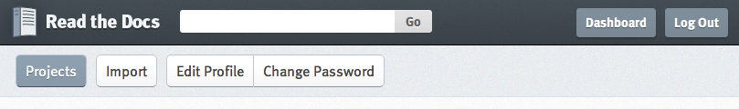

Sphinx is a tool that makes it easy to create intelligent and beautiful documentation, written by Georg Brandl and licensed under the BSD license.
The main Python stdlib docs are written in Sphinx as well as other numerous Python projects.
Sphinx is very easy to setup. Make an empty project directory, make a virtualenv and then install Sphinx into it:
$ pip install Sphinx==1.1.3
After this has completed, run the sphinx-quickstart command.
Run this command first to setup the project with reasonable defaults:
$ sphinx-quickstart
All of the defaults should be fine. I usually make sure to install the autodoc extension if I'm documenting code. It's not installed by default.
After this completes, you're ready to start writing your docs!
Sphinx uses reStructedText for the content of your docs. It's a bigger topic than what I can cover here, but check out this primer on .rst
The root of your docs is the index.rst file (if you accepted the default from sphinx-quickstart)
Here, you'll define the table of contents for your docs. Linking to other .rst files to create the structure.
.. toctree::
:maxdepth: 2
intro
tutorial
examples/first_example
examples/second_example
Once you have your docs written use this command to build them out. Sphinx supports multiple output formats (html, epub, pdf, latex), but this one is for html.
$ sphinx-build -b html sourcedir builddir
Or, if you used sphinx-quickstart it created a shortcut for you.
$ make html
Read the Docs hosts documentation for the open source community. Created by Eric Holscher, Charles Leifer and Bobby Grace for the 2010 Django Dash.
You write the docs and then hook them into Read the Docs for hosting.
Use it, it's awesome.
It's easy, just follow these steps.
Once you have your readthedocs.org account setup, go to your dashboard and click the import button.
Fill out the import form, naming the project and providing a link to the source and click the Create button.
Your docs are now building! Once it's done, you'll get a link to your docs.
It's easy to setup a webhook for github to update your docs on every push to github.